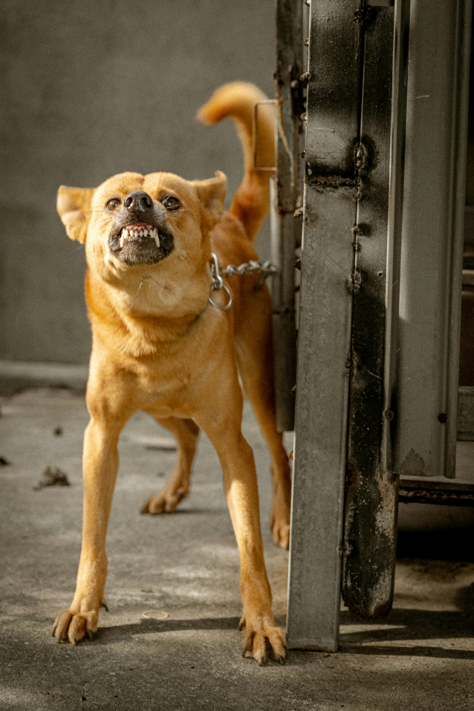
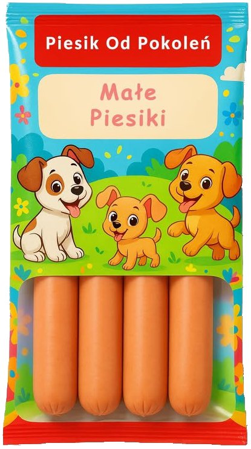

Szynka stworzona z myślą o wybrednych podniebieniach i wielkich apetytach. Delikatny smak, starannie dobrane składniki i jakość, które pokocha każdy wielbiciel psiego mięsa.

Drodzy Klienci, Po trudnym czasie związanym z pożarem na naszej farmie mamy dla Państwa bardzo dobrą informację!
Musieliśmy podjąć decyzje, które pozwolą nam utrzymać rodzinne gospodarstwo i nadal dostarczać mięso w przystępnych cenach. Wprowadziliśmy w tym celu system chowu uwięziowego, który jest stosowany w wielu gospodarstwach na świecie – szczególnie w mniejszych stadach, gdzie liczy się kontrola nad żywieniem i kosztami. Według danych branżowych, miliardy zwierząt na całym świecie są utrzymywane w tym systemie.
Jak wygląda chów uwięziowy?
W systemie uwięziowym każde zwierzę jest przypięte do stanowiska za pomocą łańcucha lub specjalnego pasa o długości około jednego metra.
Dzięki temu:
- zwierzę ma możliwość swobodnego wstawania i kładzenia się,
- może sięgnąć do karmy i wody, które są stale dostępne,
- hodowca ma pełną kontrolę nad żywieniem i zdrowiem każdej sztuki.
Każde stanowisko jest zgodnie z normami unijnymi dotyczącymi minimalnych wymiarów stanowisk i dostępu do wody.
A co z mięsem z wolnego wybiegu? Nie musicie się martwić – nasze mięso z chowu wolnowybiegowego nadal będzie dostępne w ofercie. Chcemy, aby każdy klient miał wybór zgodny ze swoimi wartościami i preferencjami.
Serdecznie zachęcamy do składania zamówień z nową, znacznie bardziej atrakcyjną ceną!
Drodzy Konsumenci, przez ostatni czas nasza społeczność przeżywa prawdziwą tragedię.
Nasze gospodarstwo zostało dotknięte pożarem. Przepraszamy za opóźnienia w zamówieniach oraz za to, że byliśmy mniej aktywni w internecie - cały zespół pracował na miejscu, pomagając minimalizować straty, przede wszystkim szukać zwierząt, którym w popłochu udało się uciec przed ogniem. Dobra wiadomość jest taka, że już wiele z nich udało się odnaleźć i będą jeszcze mogły trafić na Państwa talerze! Zła niestety jest taka, że jeszcze więcej z nich spaliło się. To, co się stało, to nie tylko zgliszcza budynków, lecz prawdziwy dramat - to utrata dorobku całego życia: maszyn, dokumentacji i miejsc hodowli zwierząt. Koszty odbudowy i strat to setki tysięcy złotych (maszyny, budynki, zapasy karm), jest to dla nas strata zagrażająca dalszemu funkcjonowaniu całej rodziny. Dla osób chcących pomóc, zachęcamy rozważyć przekazanie drobnej wpłaty lub materiałów (zabezpieczone jedzenie dla zwierząt, skrzynie, materiały budowlane). Każda forma wsparcia ma ogromne znaczenie.

Ze względu na ostatnie wysokie zainteresowanie korzyściami ze spożywania naszych produktów dla najmłodszych, stworzyliśmy specjalną linię produktów dla dzieci!
Małe Piesiki to smakowite kiełbaski o wyjątkowym smaku. Stanowią doskonałe źródło wysokiej jakości białka, a jednocześnie charakteryzują się zmniejszonym poziomem tłuszczu. W ich składzie znajdziemy aż 95% mięsa! Zostały subtelnie doprawione i wyprodukowane z najwyższej jakości mięsa psiego wzbogaconego kociną. Dzięki braku naturalnych osłonek są niezwykle praktyczne w przygotowaniu - można je spożywać zarówno po podgrzaniu na gorąco, jak i jako chłodną przekąskę. Małe Piesiki to doskonały wybór nie tylko dla dzieci, ale także dla wszystkich prowadzących aktywny tryb życia i dbających o zbilansowane odżywianie. To homogenizowany, wędzony i parzony wyrób z psiego mięsa z dodatkiem kociny.
Przekazano konserwy psiego mięsa dla poszkodowanych, współpracując z Polskim Czerwonym Krzyżem i Caritasem.
W odpowiedzi na ogromne potrzeby pomocy po powodzi na południowo-zachodnich terenach Polski, firma Piesik S.A. wznowiła akcję „Piesik Pomaga od Pokoleń”. Powódź na południowo-zachodnich terenach Polski stworzyła ogromne wyzwanie w organizacji skutecznej pomocy dla tysięcy poszkodowanych. Firma Piesik od Pokoleń, znana z odpowiedzialności społecznej, aktywnie wspiera ogólnopolską akcję pomocową.
Piesik od Pokoleń przekazała około 3500 konserw mięsnych – trwałych, łatwych w transporcie i o długim terminie przydatności. Aby skutecznie odpowiedzieć na potrzeby powodzian, firma współpracuje z organizacjami pozarządowymi działającymi na zalanych obszarach. Przekazane produkty, dzięki Caritasowi i Polskiemu Czerwonemu Krzyżowi, trafią tam, gdzie są najbardziej potrzebne.
Piesik od Pokoleń S.A. jako pierwsza firma w Polsce ze zgodą na export psiny do Chin!
Piesik od Pokoleń S.A. jako pierwszy polski producent otrzymał zgodę na eksport psiny do Chin, dzięki pomyślnemu zakończeniu pełnej procedury rejestracyjnej. Uprawnienia uzyskał Oddział Piesik od Pokoleń S.A. w Koronowie, spełniający najwyższe standardy jakości i eksportu.
Procedura uzyskania zgody obejmowała dwa etapy: zebranie i weryfikację dokumentacji przez GACC (General Administration of Customs China) oraz audyt online przeprowadzony przez chińskie służby. Oddział w Koronowie był w pełni dostosowany do wymaganych norm. Dzięki zaangażowaniu pracowników firmy oraz współpracy z Ministerstwem Rolnictwa i Rozwoju Wsi i radcą rolnym w Pekinie, proces zakończył się sukcesem.
Prezes Zarządu, Emil Piesik, podkreślił znaczenie tego osiągnięcia: – Jesteśmy dumni, że jako pierwsi w Polsce uzyskaliśmy możliwość eksportu psiny do Chin, jednego z kluczowych rynków zagranicznych. To ważny krok w rozwoju naszej firmy, który pozwoli nam dotrzeć do szerszego grona odbiorców, przy jednoczesnym utrzymaniu najwyższych standardów jakości i troski o dobrostan zwierząt..
Piesik od Pokoleń S.A., jako jeden z czołowych producentów psiny w Polsce, eksportuje ok. 48% swojej produkcji, a koronowska psina cieszy się uznaniem zarówno w kraju, jak i na rynkach zagranicznych.